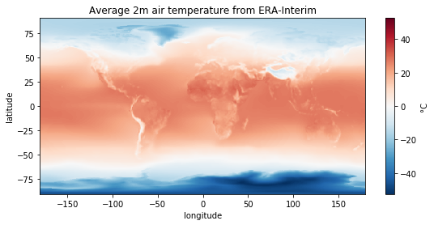

Assignment #06#
numpy and matplotlib are two fundamental pillars of the scientific python stack. You will find numerous tutorials for both libraries online. I am asking you to learn the basics of both tools by yourself, at the pace that suits you. I can recommend these two tutorials:
They can be quite long if you are new to numpy - I’m not asking to do them all today! Sections 1.4.1.1 to 1.4.1.5 in the numpy tutorial should get you enough information for today’s assignments, or you can try without it and learn on the fly - your choice!
Exercise #06-01: Indexing#
Given a 2D numpy array defined as:
import numpy as np
x = np.array([[1, 2, 3],
[4, 5, 6]])
The following indexing operations all select the same values out of the array:
x[:, 1]x[slice(0, 2, 1), 1]x[(slice(0, 2, 1), 1)]x[slice(0, 2, 1), slice(1, 2, 1)]x[..., 1]x[::1, 1]x[[0, 1], 1]x[:, -2]x[:, 1:2]x[:, [1]]
This can be checked with the following test:
from numpy.testing import assert_equal
ref = 7
assert_equal(ref, x[:, 1].sum())
assert_equal(ref, x[..., 1].sum())
assert_equal(ref, x[::1, 1].sum())
assert_equal(ref, x[slice(0, 2, 1), 1].sum())
assert_equal(ref, x[(slice(0, 2, 1), 1)].sum())
assert_equal(ref, x[slice(0, 2, 1), slice(1, 2, 1)].sum())
assert_equal(ref, x[[0, 1], 1].sum())
assert_equal(ref, x[:, -2].sum())
assert_equal(ref, x[:, 1:2].sum())
assert_equal(ref, x[:, [1]].sum())
Questions:
What is the
...syntax doing? Again, it is the literal equivalent of an actual python object: which one?some of these indexing operations are truly equivalent to the “obvious” one,
x[:, 1]. List them.Classify these operations (i) into basic and advanced operations, and (ii) by the shape of their output. Explain.
If you would like the array
a = x[:, 1:2]to have a shape of (2, ) like most of the other operations listed above, how can you reshape it?
Hint: Take a look at the numpy documentation about indexing.
Exercise #06-02: Average temperature#
Monthly averages of temperature data at Innsbruck can be downloaded from this lecture’s github via:
from urllib.request import Request, urlopen
import json
# Parse the given url
url = 'https://raw.githubusercontent.com/manuelalehner/scientific_programming/master/data/innsbruck_temp.json'
req = urlopen(Request(url)).read()
# Read the data
inn_data = json.loads(req.decode('utf-8'))
(original data obtained from NOAA’s Global Surface Summary of the Day)
Explore the inn_data variable. What is the type of “inn_data”, and of the data it contains?
Convert the data series to numpy arrays.
Using numpy/scipy, matplotlib, and the standard library only, compute and plot the mean monthly annual cycle of temperature for 1981-2010 and the mean annual temperature timeseries for 1977-2017.
Compute the linear trend (using scipy.stats.linregress) of the average annual temperature over the period 1977-2017.
Repeat for the winter (DJF) and summer (JJA) trends.
Tip 1: to select part of an array (indexing) based on a condition, you can use the following syntax:
import numpy as np
x = np.arange(10)
y = x**2
y[x > 4] # select y based on the values in x
array([25, 36, 49, 64, 81])
Tip 2: there is more than one way to compute the annual and monthly means. Some use loops, some use reshaping of the original 1D array.
Exercise #06-03: Plotting gridded temperature#
ERA-Interim reanalysis provides global atmospheric fields from 1979 to today. You can access a prepared dataset of gridded average temperature here:
from urllib.request import Request, urlopen
from io import BytesIO
import json
# Parse the given url
url = 'https://raw.githubusercontent.com/manuelalehner/scientific_programming/master/data/monthly_temp.npz'
req = urlopen(Request(url)).read()
with np.load(BytesIO(req)) as data:
temp = data['temp']
lon = data['lon']
lat = data['lat']
However, the dataset is not well processed! The longitudes are ranging from 0 to 360°, thus cutting UK and Africa in half! Reorganize the data and the corresponding coordinates to obtain a plot similar to this one:

Optional - Exercise #06-04: ACINN meteorological data#
This exercise will give you a glimpse of working with pandas. We are going to analyze a dataset downloaded from the ACINN department database. The one-month long dataset is from the automatic weather station TAWES UIBK. Here you can find a description of the variable names.
The data is shared by ACINN under a Creative Commons Attribution-ShareAlike 4.0 International License.

You can access the dataset at the URL shown below. Data downloaded from the department database are formatted as csv files, which we can read in easily using pandas. You may want to read the documentation of read_csv to see what all the arguments do.
from urllib.request import Request, urlopen
from io import BytesIO
import pandas as pd
url = 'https://raw.githubusercontent.com/manuelalehner/scientific_programming/master/data/data_Ibk_Sep2023.csv'
# Parse the given url
req = urlopen(Request(url)).read()
# Read the data
data = pd.read_csv(BytesIO(req), sep=';', header=1, index_col=0, parse_dates=True)
The data are read into a so-called DataFrame, which can be very useful for time series analysis, e.g., from weather stations. Let’s explore this DataFrame somewhat to get you started.
data.columns # list all the column headers
Index(['tl', 'tl2', 'ts', 'tb1', 'tb2', 'tb3', 'tp', 'rf', 'rf2', 'rr', 'rrm',
'p', 'som', 'glom', 'ffamm', 'ffm', 'ddm', 'ffxm', 'ddxm'],
dtype='object')
data['som'] # access the data column 'som' (sunshine duration)
rawdate
2023-09-01 00:00:00 0.0
2023-09-01 00:01:00 0.0
2023-09-01 00:02:00 0.0
2023-09-01 00:03:00 0.0
2023-09-01 00:04:00 0.0
...
2023-09-30 23:55:00 0.0
2023-09-30 23:56:00 0.0
2023-09-30 23:57:00 0.0
2023-09-30 23:58:00 0.0
2023-09-30 23:59:00 0.0
Name: som, Length: 37434, dtype: float64
data.index # access the datetime index
DatetimeIndex(['2023-09-01 00:00:00', '2023-09-01 00:01:00',
'2023-09-01 00:02:00', '2023-09-01 00:03:00',
'2023-09-01 00:04:00', '2023-09-01 00:05:00',
'2023-09-01 00:06:00', '2023-09-01 00:07:00',
'2023-09-01 00:08:00', '2023-09-01 00:09:00',
...
'2023-09-30 23:50:00', '2023-09-30 23:51:00',
'2023-09-30 23:52:00', '2023-09-30 23:53:00',
'2023-09-30 23:54:00', '2023-09-30 23:55:00',
'2023-09-30 23:56:00', '2023-09-30 23:57:00',
'2023-09-30 23:58:00', '2023-09-30 23:59:00'],
dtype='datetime64[ns]', name='rawdate', length=37434, freq=None)
Write a script that allows the user to input the variable (e.g., air temperature, wind speed, …) either as a command line argument or using input() and prints the following information in the terminal.
If the variable is wind direction:
The dominant wind direction was {XX} ({XX}% of the time). The least dominant wind direction was {XX} ({XX}% of the time).
If it is any other variable:
The maximum {VARIABLE} was {XX} {UNITS} ({DATE/TIME}), while the strongest {VARIABLE} averaged over an hour was {XX} {UNITS} ({DATE/TIME}).")
Hint 1: You can use either numpy to determine, for example, the maximum values or you can work directly with the DataFrame. (e.g., calculating the maximum). To convert a column of the DataFrame to a numpy array, you can use
temp = data['som'].to_numpy()
Hint 2: Calculating time averages is easy using the pandas resample method.
Hint 3: For wind direction, use the following eight wind direction classes: N, NW, W, SW, S, SE, E, NE.
Hint 4: To output the datetime index in a specific format, you can use the strftime method.